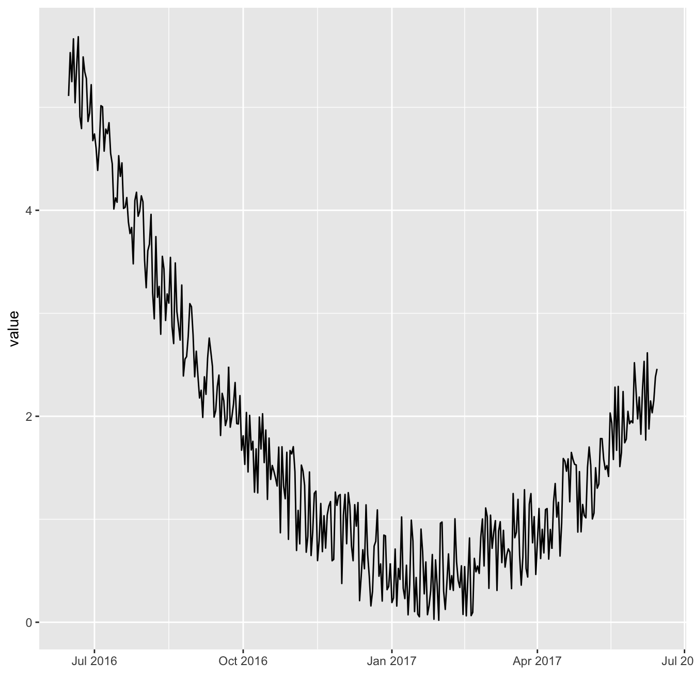
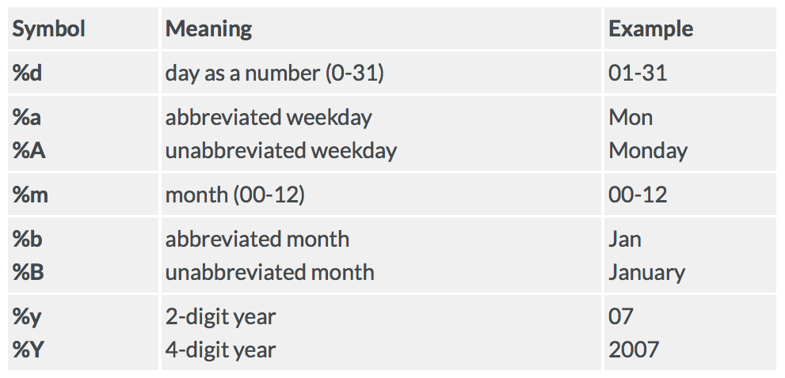
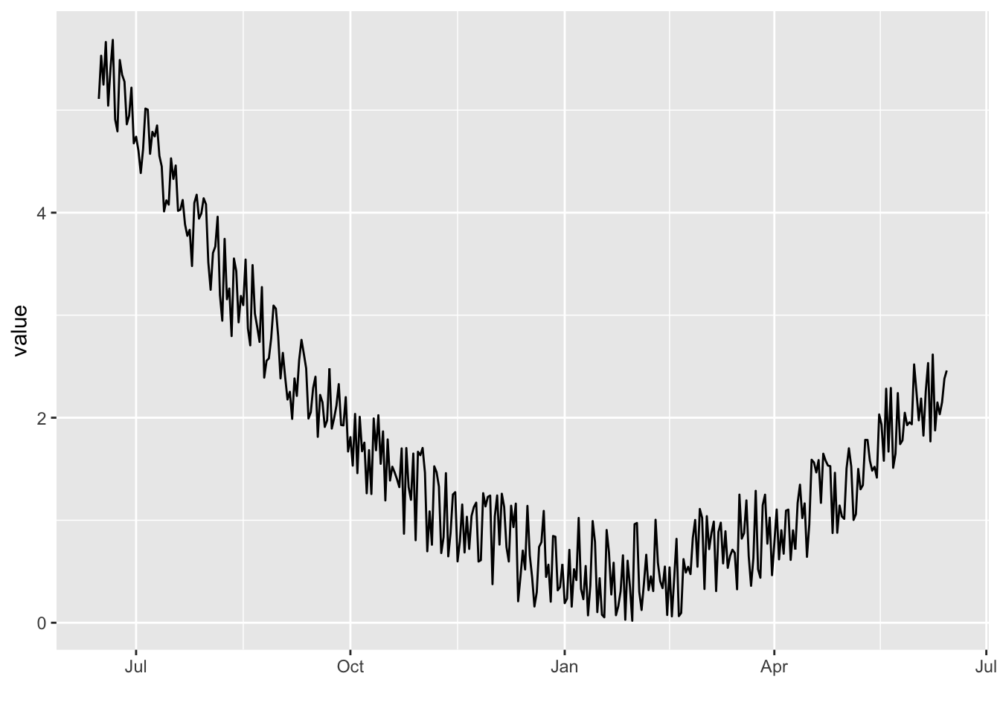
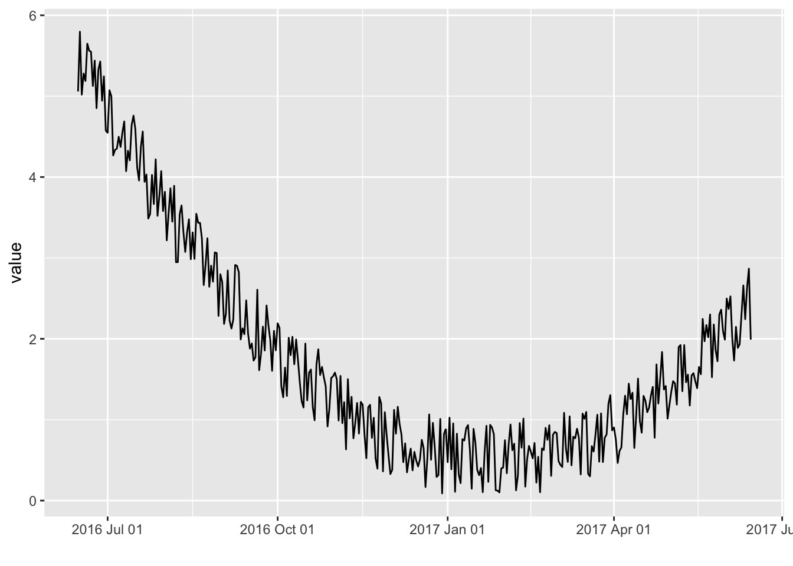
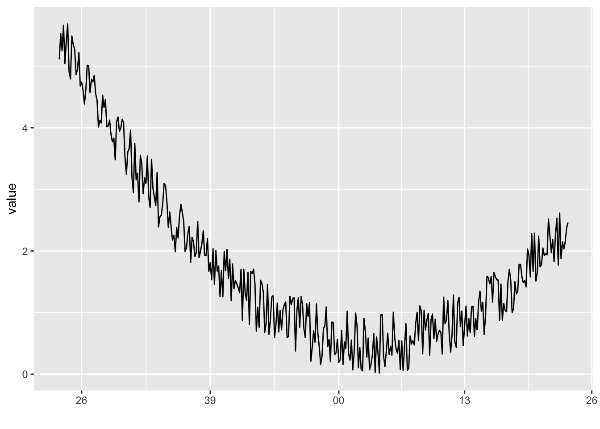
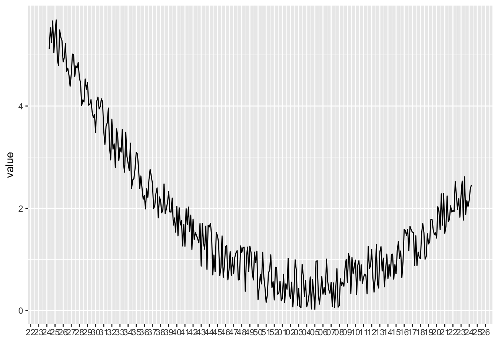
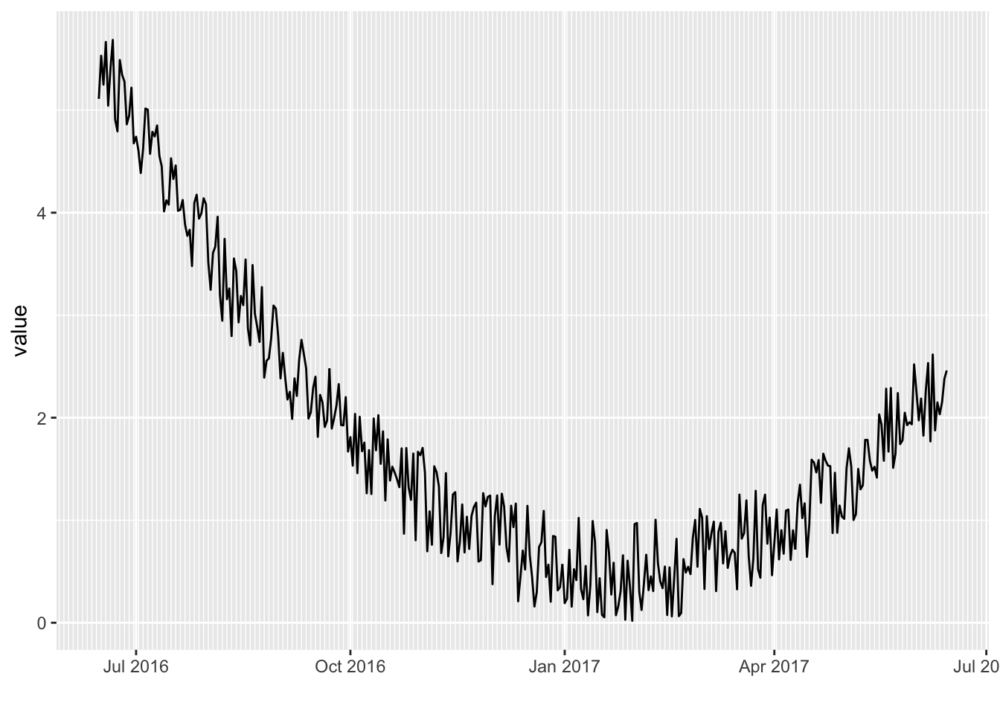
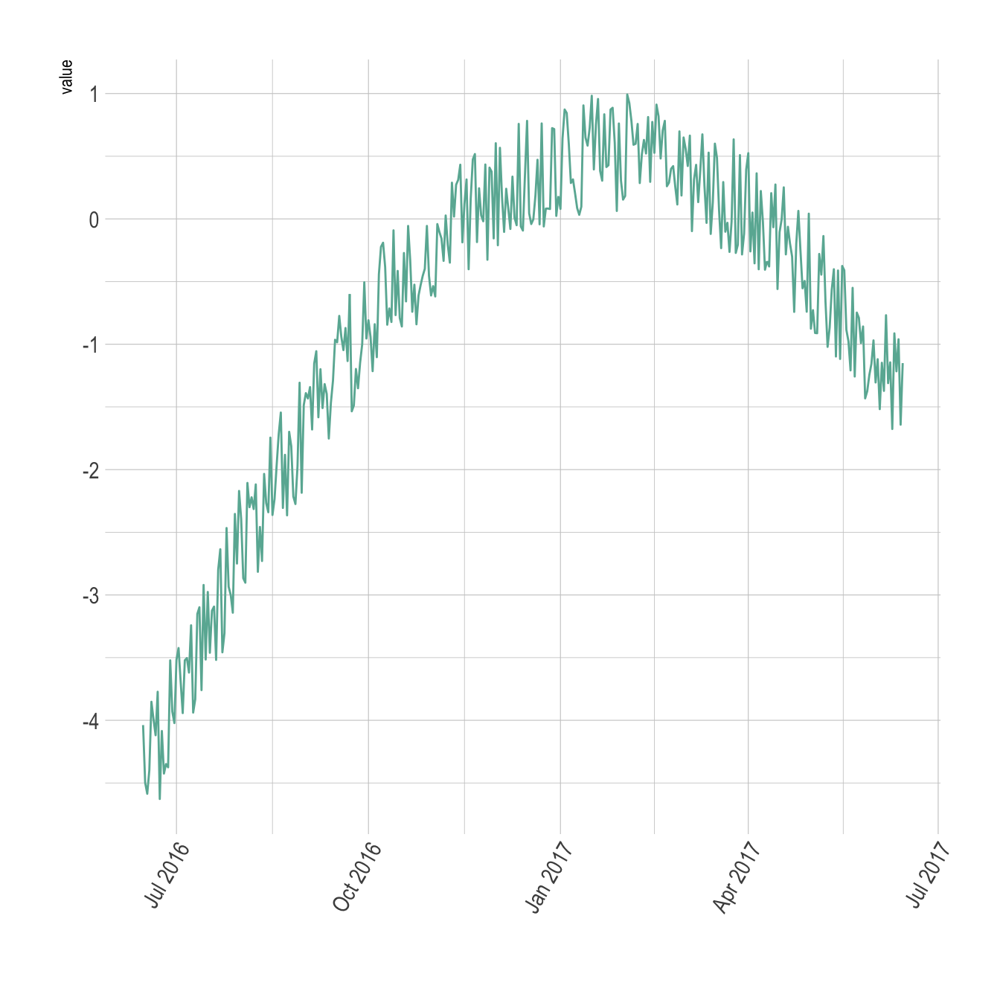
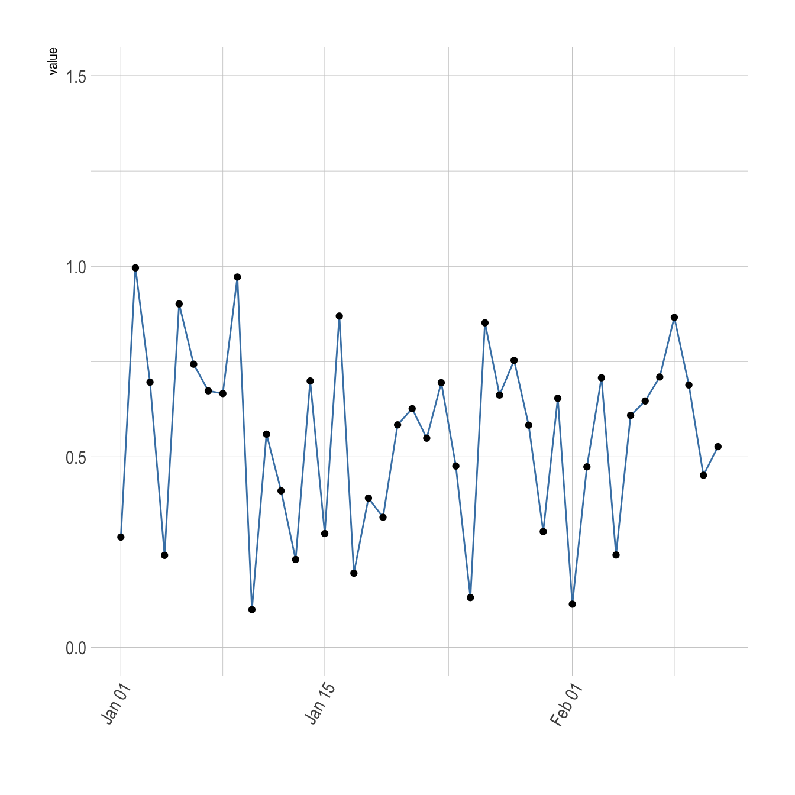

Related chart types

Scatter

Heatmap

Correlogram

Bubble

Connected scatter

Density 2d
The ggplot2 package provides great features for time series visualization. This post describes how to use different chart types and customize them for time related metric visualization.
ggplot2The ggplot2 package recognizes the date format and automatically uses a specific type of X axis. If the time variable isn’t at the date format, this won’t work. Always check with str(data) how variables are understood by R. If not read as a date, use lubridate to convert it. Read more about this here.
On the chart beside, dates are displayed using a neat format: month + year.
Note: the gallery offers a section dedicated to line charts.

# Libraries
library(ggplot2)
library(dplyr)
# Dummy data
data <- data.frame(
day = as.Date("2017-06-14") - 0:364,
value = runif(365) + seq(-140, 224)^2 / 10000
)
# Most basic bubble plot
p <- ggplot(data, aes(x=day, y=value)) +
geom_line() +
xlab("")
pAs soon as the time variable is recognized as a date, you can use the scale_x_date() function to choose the format displayed on the X axis.
Below are 4 examples on how to call the function. See beside the list of available options. (source)

p+scale_x_date(date_labels = "%b")
p+scale_x_date(date_labels = "%Y %b %d")
p+scale_x_date(date_labels = "%W")
p+scale_x_date(date_labels = "%m-%Y")
It also possible to control the amount of break and minor breaks to display with date_breaks and date_minor_breaks.
p + scale_x_date(date_breaks = "1 week", date_labels = "%W")
p + scale_x_date(date_minor_breaks = "2 day")
The ggplot2 package recognizes the date format and automatically uses a specific type of X axis. If the time variable isn’t at the date format, this won’t work. Always check with str(data) how variables are understood by R. If not read as a date, use lubridate to convert it. Read more about this here.
On the chart beside, dates are displayed using a neat format: month + year.
Note: the gallery offers a section dedicated to line charts.

# Libraries
library(ggplot2)
library(dplyr)
library(hrbrthemes)
# Dummy data
data <- data.frame(
day = as.Date("2017-06-14") - 0:364,
value = runif(365) - seq(-140, 224)^2 / 10000
)
# Most basic bubble plot
p <- ggplot(data, aes(x=day, y=value)) +
geom_line( color="#69b3a2") +
xlab("") +
theme_ipsum() +
theme(axis.text.x=element_text(angle=60, hjust=1))
pUse the limit option of the scale_x_date() function to select a time frame in the data:

# Libraries
library(ggplot2)
library(dplyr)
library(hrbrthemes)
# Dummy data
data <- data.frame(
day = as.Date("2017-06-14") - 0:364,
value = runif(365) + seq(-140, 224)^2 / 10000
)
# Most basic bubble plot
p <- ggplot(data, aes(x=day, y=value)) +
geom_line( color="steelblue") +
geom_point() +
xlab("") +
theme_ipsum() +
theme(axis.text.x=element_text(angle=60, hjust=1)) +
scale_x_date(limit=c(as.Date("2017-01-01"),as.Date("2017-02-11"))) +
ylim(0,1.5)
pRelated chart types